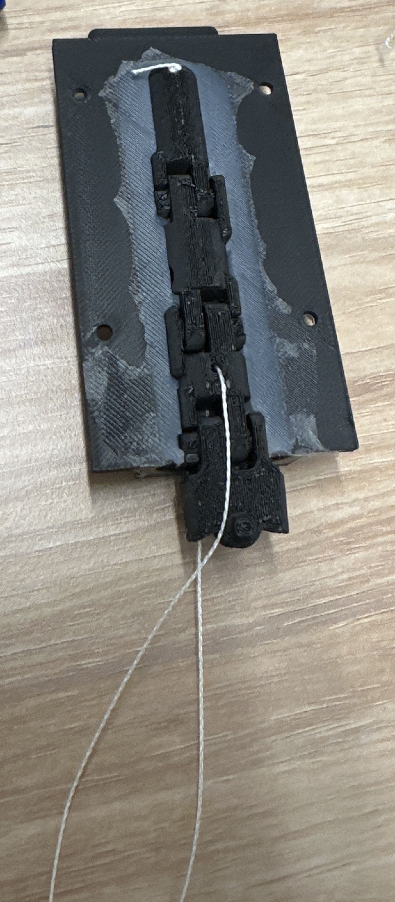
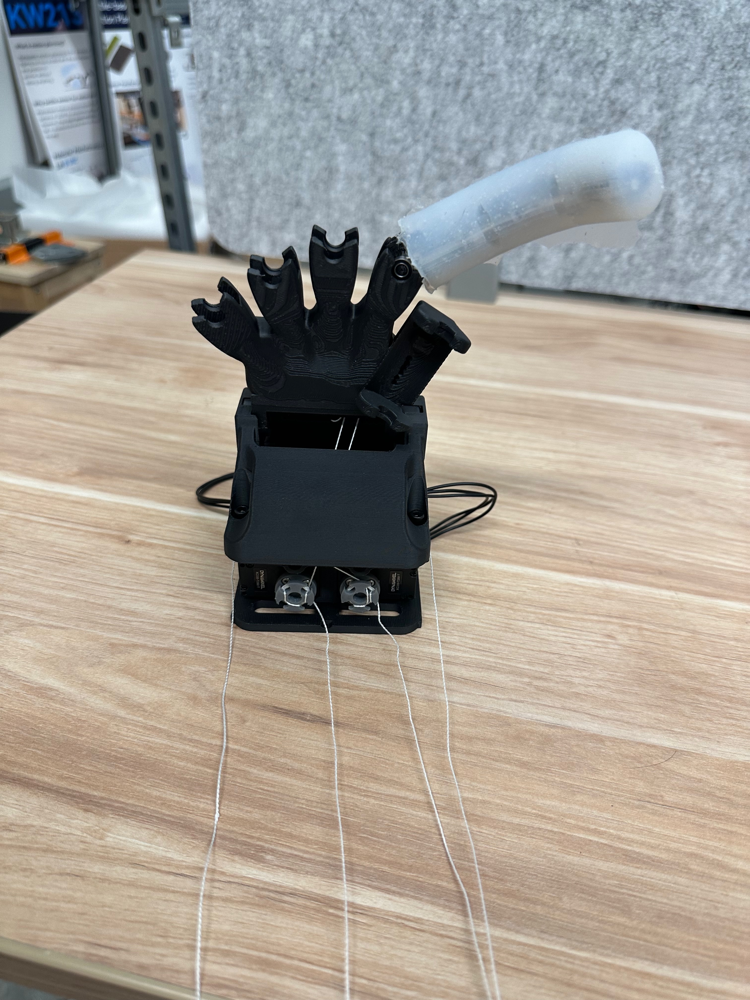
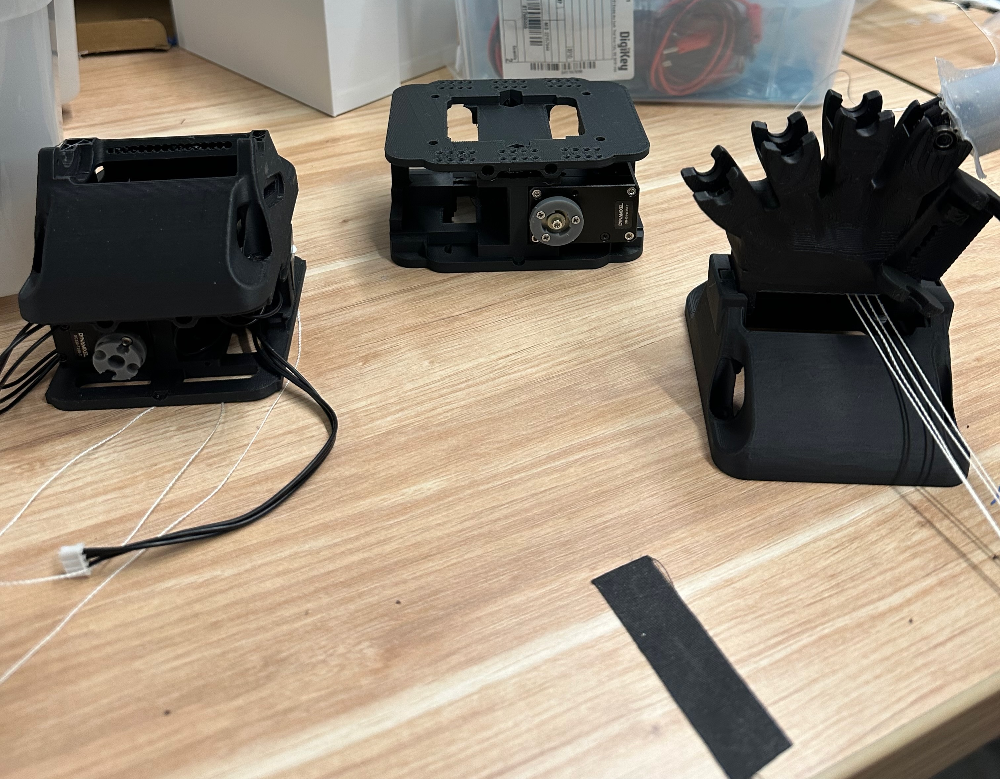

Robotic Hand
Using the open-source Orca Hand V1, this project utilizes silicone-moulding research to develop low-cost, compliant fingers for dexterous hand manipulation.
Silicone-Moulded Joint Fingers
The articulated joint chain is placed inside a custom mould and encapsulated in silicone, creating a compliant outer finger while retaining the internal tendon-driven mechanism. This process is intended to keep each finger inexpensive to manufacture and robust during contact.
A future revision will integrate precision encoders at the joints to measure individual joint angles, enabling better sensing and closed-loop control.

Single-Finger Force Test
A preliminary bench test recorded 1,600–1,800 gram-force (gf) at maximum actuation, equivalent to approximately 15.7–17.7 N. Repeatability and sustained-load performance have not yet been established.

XC430 vs XC330
At 12 V, the XC430 provides 1.9 N·m of stall torque versus 1.0 N·m from the XC330, while both run at about 70 rpm. The XC430 suits higher loads; the smaller XC330 saves space and weight.
| At 12 V | XC330 | XC430 |
|---|---|---|
| Stall torque | 1.0 N·m | 1.9 N·m |
| Speed | 71 rpm | 70 rpm |
| Weight | 23 g | 65 g |
Stall torque is a momentary maximum. Specifications: XC330-T288 and XC430-T240BB.

Preliminary force result in context
Published individual-finger forces during daily activities range from 1.4–34.8 N, while the cited research hands report approximately 28–34.4 N of fingertip force. The preliminary test result falls within part of the human activity range, but it does not yet demonstrate whole-hand grasp performance.
Next steps are multi-finger testing, dexterity benchmarks, and eventually transitioning to less expensive motors.
Sources: human daily activities, ILDA, and DexCo.